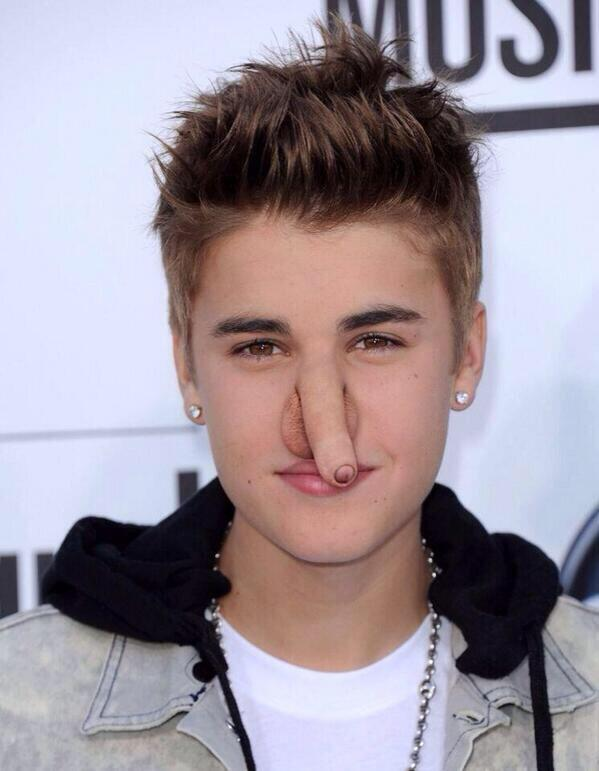

おちんちんとは

おちんちんとは、男性の生殖器、特に陰茎部を表現する日本語における幼児語または俗語である。男性器。
ちんこ
地域・時代・人によって表現の揺らぎがあり、ちんちん[1]、ちんこ、ちんぼう、ちんぽこなど、幾らか言葉の揺らぎが見られる。
漢字表記
古い中国の文字には男性器を表す「TRON 2-2436.gif」や「TRON 2-8B4D.gif」がある。「TRON 2-2436.gif」は陰茎が勃起した状態を描いた象形文字であり、「TRON 2-8B4D.gif」は小さいことや幼いことを表す「幺」偏（へん）を付した形声文字で男児・少年の性器を意味する。
男性器とは関係ない「ちんちん」
富山県などでは、正座することを「ちんちんかく」というが、これは犬の芸であるチンチンと同じく「鎮座」に由来するとされ、男性器とは関係ない[2]。その他、男性器と関係ない「ちんちん」については、チンチンを参照。
関連項目
まんこ へのこ 性教育 幼児語 性器 精巣（きんたま） - たまたま（幼児語）
質問コーナー
- おちんちんとは何ですか？
- ふざけているのですか。
- あなたのおちんちんは大きいですか？
- まあまあです。
- 将来おちんちんになりたいのですがなれますか？
- 誰でもなれます。